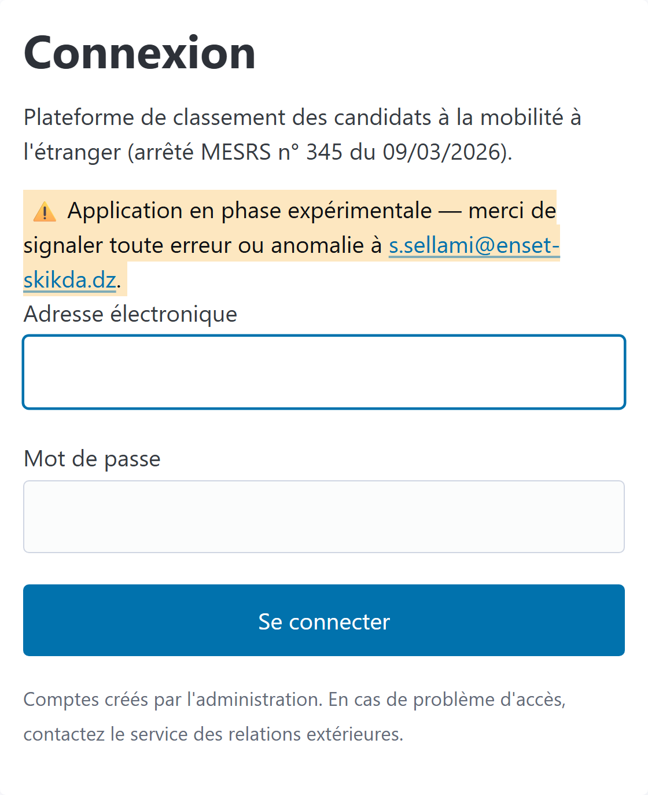
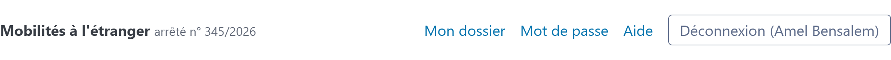
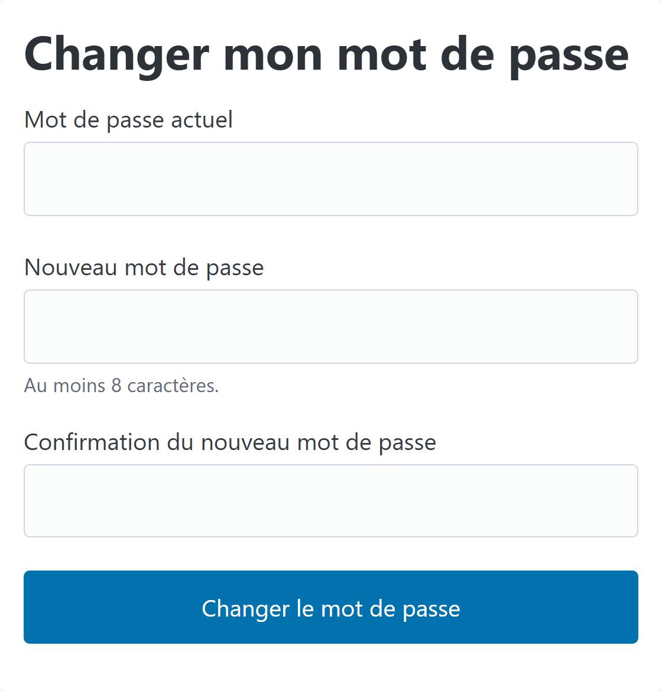
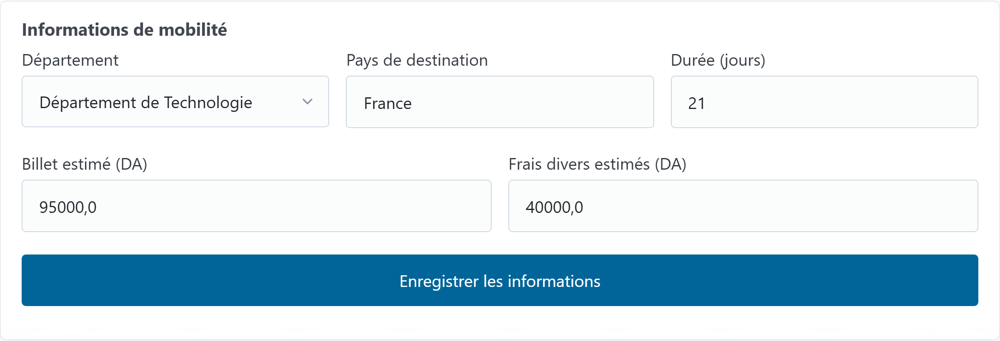
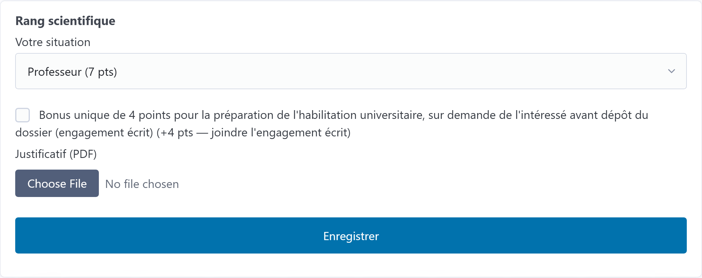
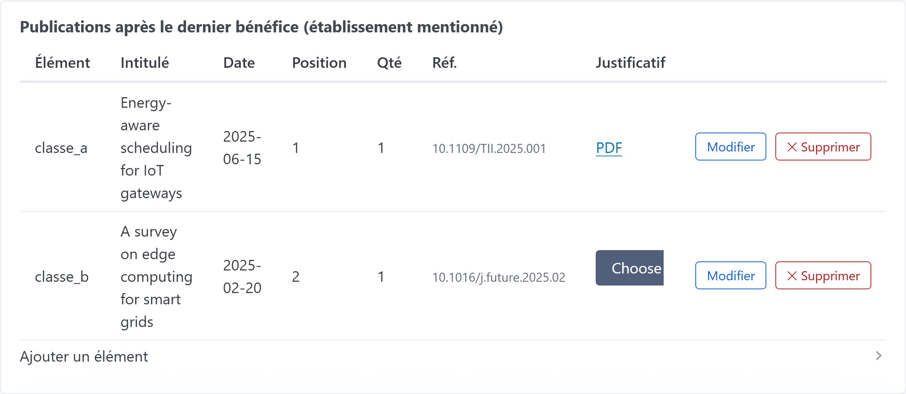
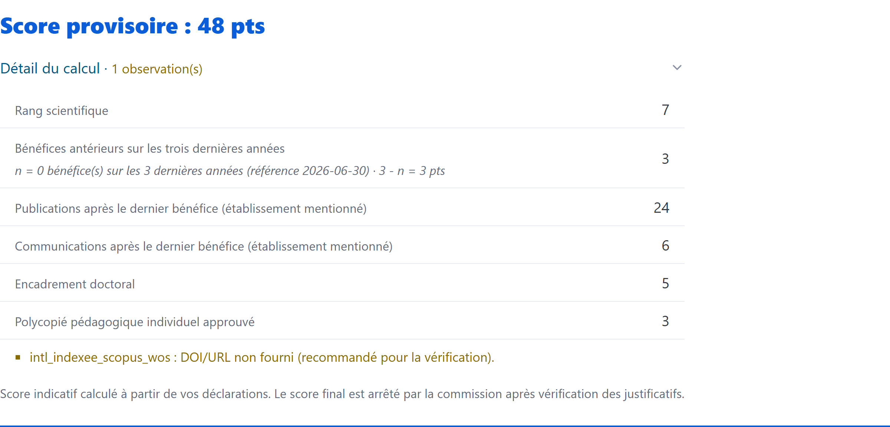
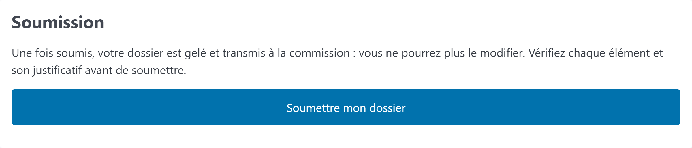
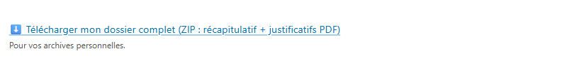

En bref
Connectez-vous → complétez votre dossier critère par critère → joignez un
justificatif PDF pour chaque élément → vérifiez votre score provisoire →
soumettez. Tant que vous n'avez pas soumis, votre dossier reste
modifiable (statut brouillon). Après soumission, vous pouvez
télécharger votre dossier complet en archive ZIP (récapitulatif +
justificatifs).
1. Se connecter au portail (authentification)
Votre compte est créé par l'administration. Vous recevez une
adresse électronique et un mot de passe initial.
Ouvrez l'adresse du portail dans votre navigateur, puis la page
Connexion.
Saisissez votre adresse électronique (celle communiquée par
l'administration).
Saisissez votre mot de passe.
Cliquez sur Se connecter.

Capture à insérer — page de connexion
Capture : guide-assets/01-connexion.png — page de
connexion.
En cas de problème d'accès
Si le message « Adresse électronique ou mot de passe incorrect » s'affiche, vérifiez
la saisie. Mot de passe oublié ou compte inactif : contactez le service des stages
(voir § 11).
Bon réflexe
Changez votre mot de passe initial dès la première connexion (voir § 3).
2. Découvrir l'interface et les menus
Une fois connecté(e), la barre de navigation en haut de page vous donne accès à :
Menu
À quoi il sert
Mon dossier
Le cœur du portail : saisir vos critères, joindre vos justificatifs,
suivre votre score et soumettre.
Mot de passe
Changer votre mot de passe à tout moment.
Aide
Ouvre ce guide d'utilisation.
Déconnexion (Prénom Nom)
Fermer votre session en toute sécurité.

Capture à insérer — barre de navigation (menus)
Capture : guide-assets/02-menus.png — barre de
menus en haut de page.
3. Changer son mot de passe
Cliquez sur le menu Mot de passe.
Saisissez votre mot de passe actuel.
Saisissez un nouveau mot de passe (au moins 8 caractères).
Confirmez-le à l'identique, puis cliquez sur
Changer le mot de passe.

Capture à insérer — changer le mot de passe
Capture : guide-assets/03-mot-de-passe.png —
formulaire de changement de mot de passe.
Confirmation Un message « Mot de passe modifié » confirme
l'opération. Utilisez le nouveau mot de passe dès la connexion suivante.
4. Ouvrir « Mon dossier » et comprendre l'en-tête
Le menu Mon dossier affiche votre dossier de
candidature. L'en-tête rappelle :
la grille appliquée et la date de campagne ;
votre référence de dossier ;
le statut : brouillon (modifiable),
soumis (verrouillé) ou gelé
(classement arrêté).
La première section, « Informations de mobilité », décrit votre
projet : département, pays de destination et durée. Vous y déclarez aussi si vous
avez obtenu votre habilitation universitaire durant l'exercice
budgétaire en cours.
Choisissez votre département dans la liste.
Indiquez le pays de destination et la durée en jours.
Cochez la case « habilitation obtenue durant l'exercice budgétaire »
si c'est votre cas (les dates de l'exercice sont rappelées à côté de la case).
Cliquez sur Enregistrer les informations.

Capture à insérer — informations de mobilité
Capture : guide-assets/05-infos-mobilite.png —
section « Informations de mobilité ».
Coûts de la mobilité Le billet et les
frais divers ne sont plus à votre charge dans le portail : ils sont
renseignés par le service budget.
Habilitation universitaire Si vous cochez cette case, sachez
que les travaux et documents pédagogiques déjà utilisés dans votre dossier
d'habilitation ne sont pas comptabilisés dans le classement (un rappel s'affiche
sur les critères concernés).
Historique des bénéfices Juste en dessous, la section
« Historique de vos mobilités » est gérée par l'administration. Elle
sert à calculer la pénalité des bénéfices antérieurs. Signalez toute erreur (voir
§ 11) ; vous ne pouvez pas la modifier vous-même.
6. Saisir les différents critères
Chaque critère de la grille apparaît dans son propre encadré. Selon le critère, la
saisie prend l'une des formes suivantes. Le nombre de points de
chaque option provient de la
grille officielle.
Type de critère
Comment le remplir
Situation à choisir (ex. rang du diplôme)
Sélectionnez votre situation dans la liste déroulante ; les points
s'affichent à côté de chaque option.
Forfait « concerné »
Cochez la case si le critère vous concerne ; cochez les bonus applicables.
Saisie de points (plafonné)
Entrez un nombre de points, dans la limite du plafond indiqué.
Comptage simple
Entrez une quantité (ex. nombre de citations) ; parfois l'URL d'un profil.
Saisie par éléments (publications, communications…)
Ajoutez une ligne par élément (intitulé, date, position d'auteur, DOI/URL…),
chacune avec son justificatif.
Formule automatique (pénalité de bénéfices)
Normalement calculé à partir de votre historique. Saisie manuelle possible
si l'historique n'est pas encore enregistré (sera vérifié par la commission).
Apprécié par la commission
Aucune saisie : ce critère est noté directement par la commission.
6.1 Critère « situation à choisir »
Choisissez l'option correspondant à votre cas, joignez le justificatif PDF, puis
Enregistrer.

Capture à insérer — critère « situation »
Capture : guide-assets/06-critere-situation.png —
critère à liste déroulante (+ éventuel bonus à cocher).
6.2 Critère « saisie par éléments »
Pour les publications, communications, etc., chaque élément est une ligne du tableau.
Dépliez Ajouter un élément.
Choisissez le type d'élément et saisissez son intitulé.
Complétez les champs demandés : date (obligatoire pour certains
critères — son libellé est précisé, ex. « Date de publication » ou
« Date de communication »), position d'auteur,
quantité, DOI/URL.
Joignez le justificatif (PDF), puis cliquez sur
Ajouter.
Cas particuliers Pour le critère « Livre évalué avec ISBN »,
des champs ISBN et URL facultatifs permettent à la commission
de vérifier l'ouvrage. Sur les critères pédagogiques (polycopié, cours en ligne, livre),
un rappel signale que les documents déjà versés au dossier d'habilitation ne comptent pas.
Date obligatoire Certains critères ne comptent que les
éléments postérieurs à votre dernier bénéfice de mobilité : la date est
alors exigée. Sans date valide, l'élément ne peut pas être enregistré.
7. Joindre les justificatifs (PDF)
Chaque déclaration doit être appuyée par une preuve au format PDF
(attestation, page de garde de la publication, programme du colloque…).
Dans le critère concerné, utilisez le champ Justificatif (PDF).
Sélectionnez votre fichier PDF (les autres formats sont refusés).
Chaque fichier doit faire 10 Mo maximum ; un PDF plus lourd est refusé.
Enregistrez : un lien PDF apparaît ; cliquez dessus
pour vérifier le document joint.
Pour remplacer un justificatif, re-déposez simplement un nouveau fichier.
Fichier trop volumineux ? Réduisez la taille de votre PDF
avant l'envoi avec un service de compression PDF, par exemple
iLovePDF
ou Smallpdf.

Capture à insérer — joindre un justificatif
Capture : guide-assets/09-justificatif.png —
dépôt d'un justificatif et lien PDF.
Conseil Donnez à vos PDF un nom clair (ex.
publication_titre_2025.pdf) et vérifiez qu'ils sont lisibles avant de
les déposer.
8. Suivre son score provisoire
En haut du dossier, une barre « Score provisoire » se met à jour à
chaque saisie. Dépliez Détail du calcul pour voir le
point par critère et d'éventuelles observations (éléments non datés,
plafonds atteints…).

Capture à insérer — score provisoire
Capture : guide-assets/10-score.png — barre de
score et détail du calcul.
Score indicatif Ce score est calculé à partir de vos
déclarations. Le score final est arrêté par la commission
après vérification des justificatifs.
9. Soumettre son dossier étape clé
La soumission transmet votre dossier à la commission. C'est l'étape la plus
importante : sans soumission, votre candidature n'est pas prise en compte.
Vérifiez chaque critère et la présence de chaque
justificatif.
Contrôlez votre score provisoire et les observations éventuelles.
En bas de page, cliquez sur le bouton mauveSoumettre mon dossier.
Confirmez dans la fenêtre « Soumettre définitivement votre dossier ? ».

Capture à insérer — section Soumission
Capture : guide-assets/11-soumettre.png —
section « Soumission » et confirmation.
Action définitive Une fois soumis, le dossier est
verrouillé (statut soumis) et ne peut plus
être modifié.
Si vous ne soumettez pas à temps À la fermeture de la
saisie sur la plateforme, tout dossier resté en brouillon est
soumis automatiquement, en l'état. Soumettez-le vous-même pour le faire
après vérification.
10. Après la soumission & résultat du classement
Votre dossier passe « en cours d'examen ». Lorsque la campagne est close et le
classement gelé, votre dossier affiche votre rang,
la taille du groupe et le score retenu.
10.1 Télécharger son dossier complet (archive ZIP)
Dès que votre dossier est soumis (ou gelé), un bouton
⬇ Télécharger mon dossier complet (ZIP) apparaît. L'archive
contient :
un récapitulatif (page imprimable) : vos informations, le détail de
votre score et la liste de vos éléments déclarés ;
l'ensemble de vos justificatifs PDF, reliés au récapitulatif.
Conservez cette archive comme preuve de votre dépôt.

Capture à insérer — téléchargement du dossier (ZIP)
Important Le rang ne vaut pas décision d'attribution : la liste
des bénéficiaires dépend du budget de l'exercice et de la décision de la commission.
Les éléments éventuellement rejetés et leurs motifs (art. 14-15) restent consultables
dans vos sections.